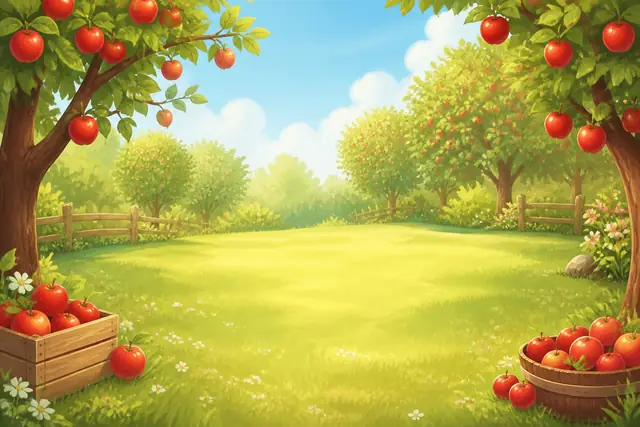

土豆豆AI英语
手机新手指引。给 4–6 岁孩子和一起玩的家长。
1. 这是什么，给谁用
每晚大约 10 分钟的英语小冒险。孩子看图、听、开口说；说不出也可以点图继续，不会卡死在某一关。
孩子看到的主要是图和英语。中文说明在家长中心。
免费
官方主题关卡都能玩：水果森林、自行车世界、机器人实验室、英雄世界、小狗救援队、钓鱼日、游泳日。
Plus
日记工作室：用语音或文字记下今天，生成属于你们家的新关卡。
生成新关要用的模型 Key 由家长自己准备（推荐 Agnes）。Key 存在这台手机里，土豆豆服务器不保存 Key，也不代付模型费用。
2. 安装与打开
安卓安装包装好后，桌面图标名叫「土豆豆AI英语」。包名是 com.tudoudou.aienglish。
- 拿到 .apk 后点开安装。
- 若提示不能装未知应用：到系统设置里，给「文件管理」打开「允许安装未知应用」，再装一次。
- 装好后点图标即可玩，不用再开电脑。
微信传文件时常把 .apk 改成 .apk.1。请改回 .apk 再装。
微信传 APK 怎么装
手机上如果还装着旧的「Fruit Forest」（包名 com.aienglish.fruitforest），先卸载旧版，再装现在这个包。
3. 孩子怎么玩
首页示意。点一张主题图进入地图；右上角是贴纸星星和家长入口。
- 点一张官方主题大图。左上角「Family / 今日冒险」是家里生成的关卡；还没做过日记时，先玩官方主题。
- 地图上点亮着的关卡。锁住的要先玩前面的。
- 进关后先听大图里的英语。
- 点红色麦克风，大声说这个词（大约听 5 秒）。说不出就点画面上的图。
- 过关会看到贴纸，星星会增加。右上角 ⭐ 打开贴纸墙。
👂先听
跟着说，例如 apple；说不出就点这张图
⭐通关拿贴纸，星星会亮
地图若写成「今天英语冒险玩够啦，明天再来」，是每日时长到了，不是坏了。家长可以在家长中心把时长留空，表示不限制。
4. 家长中心怎么进
首页或地图右上角，点家庭图标 👨👩👧。
先答对一道简单加法（两个小数字相加），才进家长中心。这是防止孩子误进设置，不是账号密码。
进去后可以看到今天玩了多久、星星数量，以及家庭日记、家庭日历。
5. 登录、Plus、模型 Key
邮箱登录
- 家长中心顶部「账号与 Plus」。
- 填写家长邮箱。若出现图形验证码，先填图里的数字。
- 点「发送验证码」，再填邮箱里的 6 位数字，点「登录」。
Plus 做什么
- 不登录、不开 Plus，官方主题关卡一样能玩。
- 已经生成过的日记关，日历里也能接着玩。
- 「记下今天并生成新关」需要 Plus。
在线支付若还没开放：加微信 17775566806，好友备注写「土豆豆」。参考价以家长中心为准（常见为包月 ¥18、包年 ¥148）。模型调用费另算。
自己的模型 Key
- 家长中心 → 家庭日记 → 右上角「设置」。
- 关卡生成模型选 Agnes（也可用 DeepSeek）。
- 粘贴自己的 API Key，点「保存模型与 Key」。不要加 Bearer，前后不要空格。
- 配图若选「Agnes 图」，和关卡共用这一把 Key。
怎么获取 Agnes Key
DeepSeek Key 说明
Key 相当于密码，不要发到微信群。换手机可在日记设置里导出备份；默认备份不含 Key。
6. 日记工作室：生成新关

- 确认已经登录，并且 Plus 有效。
- 家长中心点「家庭日记」。
- 在输入框打今天的事，点「发送」；或点「语音输入」，说完再点「结束录音」。
- 点下方「生成关卡」，等它做完。设置里可改今天要几个主词（大约 5–9 个，一词一关）。
- 孩子回到首页，点 Family「今日冒险」；或由家长打开「家庭日历」，点当天再玩。
发出的语音和文字会留在这一天。怎么搜、怎么从结果进到这一天，见下一节。
生成时请留在 App 里等一会儿。提示要填写 Key，就先去「设置」保存 Agnes 或 DeepSeek 的 Key。
7. 语音或文字记录
家长在家庭日记里记下今天的事，这条记录会留在当天。之后可以搜索，也能从结果进到这一天。
怎么记
- 家长中心点「家庭日记」。
- 在「输入今日故事…」里打字，点「发送」。
- 或点「语音输入」，说完再点「结束录音」。录音会留下，可以回听。转写不准就点「改字」。
还没记时，页面写着：「今天还没有消息。打字或点语音说说孩子今天做了什么。」发出之后，下次打开这一天，文字和语音还在。
怎么搜
- 家长中心点「家庭日历」。在家庭日记页最下面，也可以点「打开家庭日历」。
- 用页面顶部的搜索框。框里的提示是「搜索日记 / 关卡词 / 场景 / 提示词…」。
- 输入记得住的词。下面列出对上的日期，以及日记里的片段。没有对上时显示「没有匹配的日记或关卡」。
怎么进当天
- 搜索结果里，每一天都标着日期。
- 点「打开关卡」，进入这一天已经生成的关卡。
- 点「编辑」，回到这一天的家庭日记，可以接着记或改字。
不搜索时，直接看月历：有颜色的日子表示已生成关卡，点它进入这一天。小圆点表示这一天有日记语音。
还没点「生成关卡」，记录也在，也能搜到。这一天若还没有关卡，点「打开关卡」会提示先在「家庭日记」里生成。
8. 常见问题
装不上？
看文件是不是 .apk，以及是否允许未知应用。旧包名还在时先卸载。步骤见上面的安装说明。
为什么没有升级提示？
侧载包不会像应用商店那样弹出更新。向给你安装包的人要新的 APK，包名仍是 com.tudoudou.aienglish 时直接覆盖安装。同一签名覆盖，星星和日记一般还在。若必须先卸载，这台手机上的进度和日记会清掉，卸载前可在日记设置里「导出完整备份」。
生成失败，提示要 Key？
到家庭日记 → 设置，选好模型并保存 Key。未开通 Plus 时，新关也不能生成，已有关卡仍可玩。Agnes 网站打不开时，换 Wi‑Fi 或蜂窝网络再试。
点了麦克风没反应？
到系统设置 → 应用 → 土豆豆AI英语 → 权限，打开麦克风。然后大声说英语单词。也可以点大图再听，或点画面右下角小点打字。
地图变暗，玩不了？
多半是今天时长到了。家长中心把「每日时长上限」留空并保存，或等到明天。